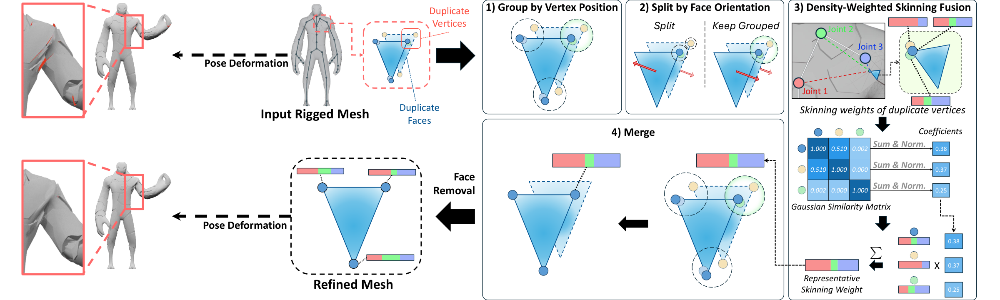
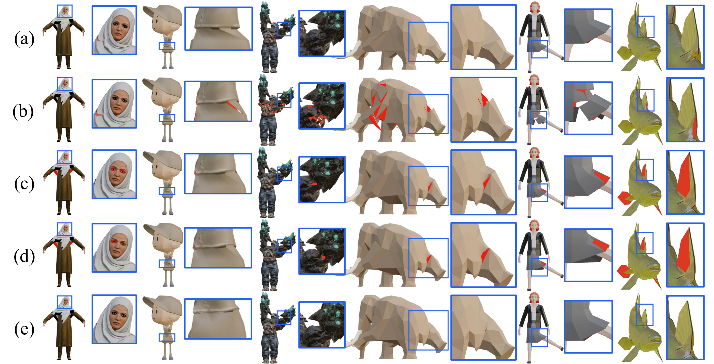

Video Results
Original and refined meshes, each with skinning weights predicted by Puppeteer, using the same ground-truth skeleton, joint motion, and camera.
Refinement reduces the number of vertices from 1,098 to 274 while retaining all 544 faces. Demo details.
Abstract
Duplicate vertices in rigged 3D assets can receive inconsistent predicted skinning weights and separate during deformation, producing visible seam opening and exposing back-facing triangles. Conventional mesh repair methods modify geometry without accounting for the coupled relationship between mesh vertices and skinning weights, which can alter local surface structures or introduce inconsistent deformation. We propose a deformation-aware mesh refinement method that resolves duplicate vertices while preserving the original geometry, skeleton, and distinct surface structures. The method groups vertices at identical positions, partitions them according to surface orientation, consolidates their skinning weights using density-weighted fusion, and removes degenerate and same-oriented duplicate faces generated during vertex merging. Experiments on RigNetv1 and AXL 2.0 show that the proposed method achieves the highest face preservation ratio and the lowest geometric deviation among the evaluated refinement methods while substantially reducing non-manifold edges. These results demonstrate that deformation-aware refinement provides a reliable alternative to geometry-only mesh repair for character auto-rigging.
Proposed Method

Surface orientation partitioning. Vertices at identical positions are grouped, then partitioned according to their connected faces to preserve double-sided structures.
Skinning weight fusion. KDE-based weighting combines skinning weights within each subgroup before merging its vertices. The modest improvements over averaging do not establish general robustness to isolated outliers.
Vertex merging and face removal. Vertices are merged within each subgroup. Collapsed faces and index-matched duplicate faces are then removed.
Quantitative Results
We compare refinement methods on RigNetv1 and AXL 2.0 using skinning weights predicted by Puppeteer with the ground-truth skeleton fixed. Among the refinement methods, ours retains more faces and has lower geometric deviation on both datasets. On AXL 2.0, it also improves Skin L1 and deformation error.
| Dataset | Method | FPR ↑ | CD ↓ (×10−7) | Mean NME ↓ | Skin L1 ↓ (×10−3) | DE ↓ (×10−3) | SO ↓ |
|---|---|---|---|---|---|---|---|
| RigNetv1 | No Ref. | 1.000 | 0.000 | 183.5 | 25.925 | 15.377 | 1.07 × 10−4 |
| Ma et al. | 0.989 | 1.045 | 132.8 | 25.925 | 15.381 | 0 | |
| Blender | 0.989 | 0.413 | 132.9 | 25.926 | 15.382 | 0 | |
| Ours | 0.990 | 0.006 | 137.3 | 25.926 | 15.380 | 3.65 × 10−5 | |
| AXL 2.0 | No Ref. | 1.000 | 0.000 | 6476.7 | 14.397 | 6.763 | 9.39 × 10−3 |
| Ma et al. | 0.990 | 42.181 | 623.3 | 14.192 | 6.702 | 0 | |
| Blender | 0.987 | 47.676 | 602.6 | 14.187 | 6.684 | 1.53 × 10−10 | |
| Ours | 0.993 | 0.002 | 643.7 | 13.417 | 6.349 | 1.27 × 10−6 |
FPR: face preservation ratio; CD: vertex-level Chamfer distance; NME: non-manifold edges; DE: mean Euclidean deformation error over 64 random poses; SO: seam opening. No Ref. is the original mesh. SO evaluates originally coincident edges with matching ground-truth endpoint weights. Zero or near-zero SO can also result from merging opposite sides, so it should be interpreted alongside surface preservation and the qualitative comparisons.
Face Removal
Vertex merging can introduce collapsed faces. Face removal eliminates all collapsed faces and removes most same-oriented duplicate faces; some remain because cleanup compares vertex indices rather than positions.
| Dataset | Vertex Merging | Face Removal | Collapsed Faces ↓ | Same-oriented Duplicate Faces ↓ |
|---|---|---|---|---|
| RigNetv1 | ✗ | ✗ | 0 | 111,907 |
| ✓ | ✗ | 8,428 | 111,907 | |
| ✓ | ✓ | 0 | 195 | |
| AXL 2.0 | ✗ | ✗ | 0 | 8,605,578 |
| ✓ | ✗ | 170,180 | 8,605,578 | |
| ✓ | ✓ | 0 | 14,783 |
Qualitative Results
Predicted skinning on the original mesh can expose back-facing triangles as coincident vertices separate during deformation. Geometry-only refinement can also collapse double-sided surfaces. Our method considers both surface orientation and skinning weights.

(a) Ground-truth skinning; (b) original mesh; (c) Ma et al.; (d) Blender; (e) ours. Red regions indicate back-facing triangles exposed by surface cracks.
BibTeX
@misc{kim2026deformation,
title={Deformation-Aware Mesh Refinement for Robust Automatic Rigging},
author={Kim, Hyun Wook and Han, Sanglim and Kim, Hak Gu},
year={2026},
note={Manuscript}
}